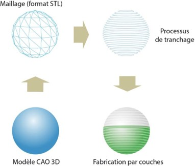
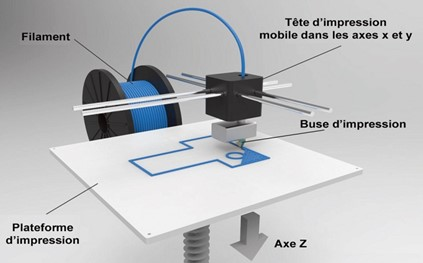

Prototypage (rapide)
Table of Contents
Fabrication - FAO
CAM: Computed aided manufacturing / FAO: Fabrication assistée par ordinateur
D'une pièce Solidworks vers la découpe laser
- Faites un clic droit sur la face de votre solide que vous souhaitez découper
- Sélectionner Exporter vers DXF/DWG
- Choisissez un nom de fichier et cliquer sur enregistrer
- Dans la fenêtre à gauche de votre écran, valider en cliquant sur la coche verte
- Enfin, dans la dernière fenêtre, vérifier si il n'y a pas d'erreur et cliquer sur enregistrer. Si vous voulez supprimer certaines entités, vous pouvez le faire en les sélectionnant puis en cliquant sur supprimer
D'une pièce Solidworks vers l'impression 3D
- Fichier/Enregistrer sous
- Sélctionner STL dans le menu déroulant Type
- Cliquer sur enregister
Fabrication additive

Architecture Imprimante 3D par dépot de filament

Pramètres du slicer
./3dmodels/etude_de_cas_1_fondamentaux.STL
- Matériaux
- Température extrudeur
- Vitesse d'impression
- Hauteur de couche
- Coque
- Taux et pattern de remplissage
- Aide à l'adhérence
- Température du plateau
- Orientation
- Support
- Solidité